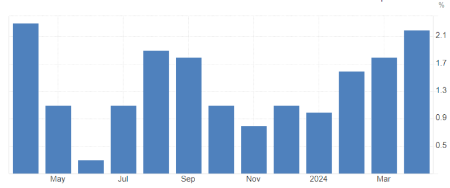

Weekly market outlook for 11.06.24 – 14.06.24
June 11, 2024.
Another week, another blast in the market!
Short Summary of What Happened Last Week:
Strong NFP: We got a strong headline reading on the NFP report last Friday at 272k vs. 185k expected.
Strong Wages: We got stronger wage data on the NFP report at 0.4% MoM vs. 0.3% expected.
Upticking US Unemployment: Came in at 4.0% vs. 3.9% expected on the report.
Over the weekend, we had a significant political event that needs attention: the EU Parliament election yesterday.
As of right now, 12 of 27 countries have completed vote counting. The Christ-Democratic party EPP is in front with 186 (+10) projected seats, followed by the social democrats S&D party at 135 (-4) projected seats. The third place is held by Renew Europe RE with 79 (-23) seats, marking them as the big losers in this term’s round.
There was a notable shift in many individual country votes, with a significant rise in center-right and far-right wing parties. One of the biggest impacts was seen in France, where the current PM Macron dissolved the parliament and called for a snap election immediately after the first couple of projections were announced. The snap election will take place on June 30 and July 7, just a few weeks before the 2024 Olympics in Paris.
Macro data outlook:
We didn’t miss a lot in yesterday’s (Monday) macro action, besides a little miss in another US bond auction. The 3-year was on the table, and we got a 1.1bp tail at 5.659% High and a WI of 5.648%. The market was overall not impressed by it – as usual.
That said, it’s never a good thing if we get consecutive big misses on auctions. The market was clearly still trying to digest the NFP and EU election there.
Today is getting a bit spicier with the UK claimant count change and wages coming up at 6 am GMT (2 am EST). Expected is a 10.2k change vs. 8.9k last time and a whisper number of 4.0k.
UK claimant count change MoM
Some focus could be on the average earnings coming up at the same time, with both, including bonus and excluding bonus, forecasted to remain unchanged at 5.7% and 6.0% respectively for the annualized reading. The whisper number is surprisingly 0.2% lower for both data points, so keep an eye on that one!
UK average earnings excl. bonus 3Mo/Yr
Next on the list – 10-year US bond auction at 1 pm EST. As the benchmark yield, it could have some bigger impacts if we see a big tail again, so be prepared, even if it’s 99% of the time nothing much.
Wednesday: The Big One!
China data is coming up first with CPI for May hitting at 01:30 GMT. Expectations are at an annualized 0.3% and 0.4% reading (two different forecasts there actually), unchanged and a tick higher from the last report. We don’t have a consensus reading for the MoM data point; April came in at +0.1%, and the whisper number is for a -0.2% reading which could have some bigger dovish reactions in the market.
China headline CPI MoM
China headline CPI YoY
China PPI for May is coming in at the same time, with expectations coming in between -1.5% and -1.8% YoY over the April reading of -2.5%.
China headline PPI YoY
Looking at the China PPI YoY chart is an incredible look, to say the least!
Next up, German inflation numbers for May at 6 am GMT, but it’s just the final reading, so don’t expect a lot of movement unless there’s a bigger revision.
Some more UK data dropping at the same time, with manufacturing and industrial production data on the agenda. Again, not expecting HUGE moves, but keep an eye on it for bigger surprises and some mini spikes.
After that, though, the macro space is reaching the climax for the week.
It’s time again for US inflation numbers to kick some a**es! As usual, 8:30 am EST. The headline is expected to come in at 0.1% MoM vs 0.3% for April, with the YoY reading expected unchanged at 3.4%. Whisper numbers align with the consensus.
US headline CPI MoM
US headline CPI YoYUS headline CPI YoY
Core is expected to remain unchanged as well MoM at 0.3%, with YoY readings expected at 3.5% (3.6% whisper) compared to 3.6% in last month’s report.
US core CPI MoM
US core CPI YoY
Any upside surprise is likely to trigger a bigger reaction, given the fear about “higher for longer” still sitting deep in the minds of investors. Stagflation is another word that will be shouted from every rooftop on Wall Street if we get yet another hot report.
Reversely, data coming in as expected – which means a touch softer on the headline MoM – or softer data than expected will likely trigger a bigger, dovish reaction all across the board.
The latter is my base case, honestly. Looking at bonds to get lots of support from a soft reading, USD to lose some ground (gathering it back later though), and equities rocketing away first, before giving some back again and consolidating afterwards. The only really lasting move I can see is in bonds, honestly.
We are STILL not done with the macro data on Wednesday after the CPI report though!
The next big bummer hits just 5 hours and 30 minutes later with the FOMC rate decision, including another round of dot – plots followed by the press conference featuring Chairman Powell.
There is NO change expected on the rate decision, with an implied market rate chance of 97.5% (including spreads) as per the CME FedWatch Tool right now.
The bigger surprise is going to come from the dot plot. The fear here is for “higher for longer,” so be on the lookout for fewer dots to the downside (especially in the short term) and more dots on the upside. The crux will be if there is any dot showing hikes again – but that I honestly really, really doubt. Nonetheless, if that’s the case, we could be in for some seriously strong hawkish reactions. I doubt that there is any real dovish surprise in the dot plot possible, even though we should have been pricing in the more hawkish tone already by now.
FED economic projections, March 20, 2024
FED dot plot, March 20, 2024
Note that the forecasted median PCE inflation for 2024 was sitting at 2.4% YoY and core PCE inflation at 2.6% as of the last report from March. Since February, the core PCE report has come in steadily at 2.8% YoY, with MoM readings only slowly coming down from the spike in January.
US core PCE index YoY
US core PCE index MoM
All in all, the FOMC should be a bigger mover on the dot plot, and then a lot more on Powell, even though we cannot really say which way it is going to go.
My base case is still for a hawkish reaction on the rate decision, released statement, and updated projections, followed by a dovish reaction on the Chairman leaning into the “it is all fine, inflation is coming down steadily along with easing in the labor market so we are on track to cut rates in September” side. That is, however, depending on the CPI report coming out earlier in the day too – if it’s too hot, we can likely skip the dovish press conference and mark/forecast that as “neutral.” If the CPI report is in line or soft, the base case applies.
The reactions in an overview:
Hawkish:
- Strong USD
- Weak bonds (higher yields)
- Weak equities
- Weak gold (commodities)
Dovish:
- Weak USD
- Strong bonds (lower yields)
- Strong equities
- Strong gold (commodities)
I think any bond downside is going to be an opportunity to buy the dip—over the course of a week or two. USD downside as well, same as equities. That, in turn, is leaving us with some solid inter-asset hedge plays on the “triangle of love” between those three big assets.
That is it then for Wednesday for good!
Thursday is continuing on the strong side of macro data release.
Australia is reporting labor data at 01:30 GMT with the unemployment rate expected at 4.0% compared to 4.1% for April data (4.2% whisper). Employment change seasonally adjusted is expected to hit 27.5k vs. 38.5k last time around.

AUD unemployment rate
AUD employment change MoM
Expecting bigger reactions on the AUD on that one!
Next notable on the list – weekly jobless claims and US PPI both dropping at 8:30 am EST.
I’m not going to focus too much on the weekly claims, as usual.
PPI: Consensus is for 0.1% MoM (0.2% whisper) compared to 0.5% in April, with a YoY reading consensus for May at 2.5% (2.2% whisper) compared to the 2.2% we got in the last data release.

US headline PPI YoY
US headline PPI MoM
Core PPI is expected to come in at 0.3% MoM vs 0.5% in the April data. YoY is expected to hit at 2.5% (2.3% whisper) vs 2.4% last time.

US core PPI YoY
US core PPI MoM
Any big deviation could lead to a quick move of around 20-40 pips across the board in the FX market before fading the report completely – it’s a classic, quick intraday play that you should keep attention on to make some decent bucks on the side!
Later in the day at 1 pm EST we get a 30y US bond auction. That is a big one, as the long end is what would be sought after in case we get soft inflation data and a dovish FOMC. Vice versa, it would be the one to dump if we get hot readings. As it’s the first auction after the data for May, it’s a good indicator of where the bond market is standing.
Friday is then starting hot off the bat with BoJ rate decision and press conference. As usual, we don’t have a fixed scheduled time when that is coming out, but it’s usually around 3 am to 5 am GMT, so be prepared on your JPY trades during the Friday Asian session!
The rest of the last trading day for the week is pretty quiet, with Michigan consumer sentiment index being the only notable release at 10 am EST. Keep an eye on the inflation expectations on the report!
That is it, another wrap of the weekly outlook!
I hope you enjoy reading those, leave a like and comment!
Dom
.png)
.png)
.png)